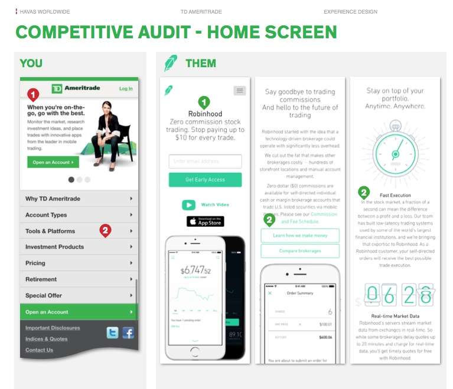
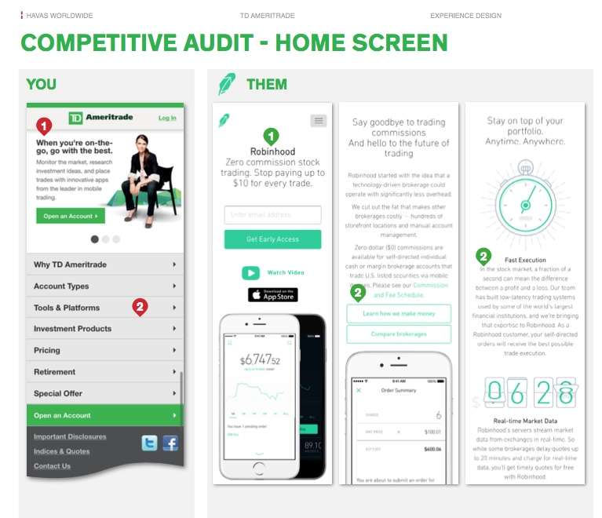

TD Ameritrade · UX Research
Research and Improvements
Ongoing UX research, competitive analysis and heuristic evaluation to keep a leading financial platform ahead of user expectations.
The Engagement
TDA is a long-time client of Havas and from time to time we need to review the work we do with them, propose changes and add or modify content. There is always a need for user research, heuristic evaluation, competitive analysis and other evaluative methods. These ongoing efforts ensure that the site always has up-to-date features and content and is easy to use.
 

Competitive Analysis
One of the ways of ensuring that the product is always at the forefront of user expectations is to conduct frequent competitive analysis. We ran these at least twice a year and would notify the client of any new features they might want to review or adopt.
Heuristic Evaluation
Similarly, from time to time, we would review the site from the point of view of the newest heuristics. This ensured we always kept in line with the newest research and trends in user experience design, providing actionable recommendations to the client team.